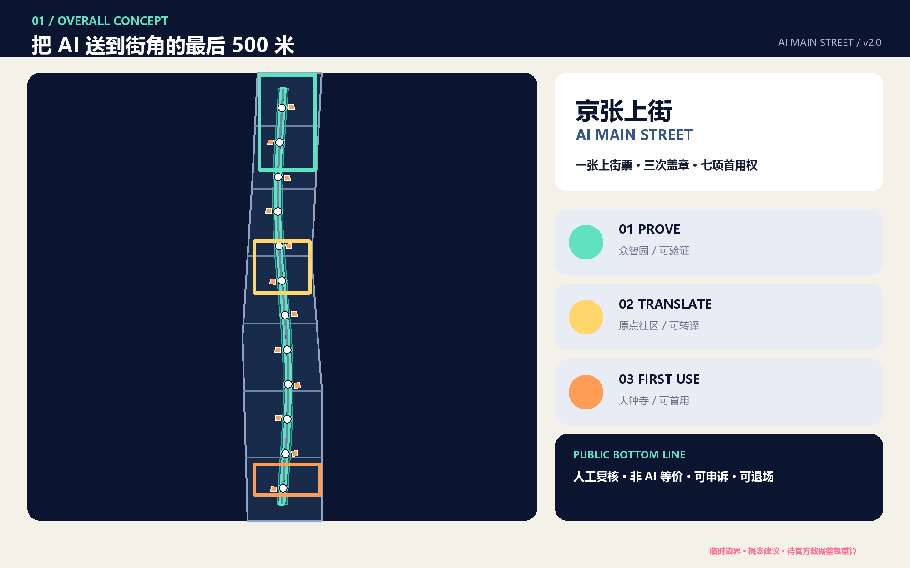
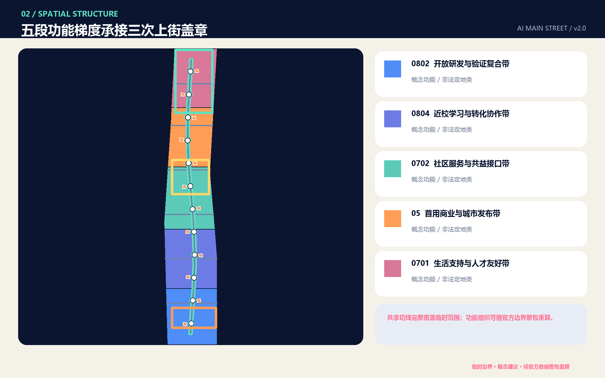
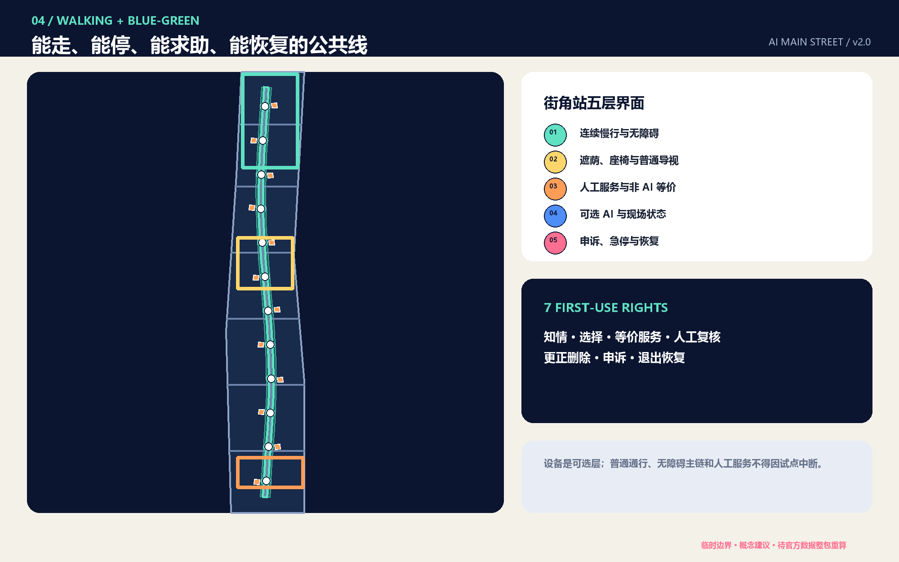

识别高校、园区、社区与轨道方向的创新关系，不替代官方规划边界。
总览地图

上街票协议

街票不是通行许可，而是一份把空间、责任、数据、人工接管和退场条件放在一起的概念交接记录。
三层范围与用地分区
以临时边界组织一线三场十二站，所有面积可在官方数据到位后重算。
众智园、AI 原点社区与大钟寺作为验证、转译和首用的概念样区。

重点区域

交通慢行与蓝绿公共空间

- 知情权现场说明用途、能力边界、责任角色与当前运行状态。
- 选择权默认不强迫参与，不以使用 AI 作为进入公共服务的条件。
- 等价服务权始终保留无 App、非 AI、纸面或人工的等价路径。
- 人工复核权涉及个人权益、安全、健康或重要资源的结果必须可交给具体人员复核。
- 更正与删除权可更正错误输入，并按规则撤回、删除或停止继续使用相关数据。
- 申诉权提供现场、电话和线下至少两类可达申诉渠道，并记录处理结果。
- 退出与恢复权停止试点后恢复普通公共使用，保留服务连续性并公开退场原因。
建筑与更新项目
先核验历史、结构、权属、安全、一层公共性与无障碍，再讨论低碳适配或可逆新增；高度、容积率和拆改留结论保持 unknown。
先做协议、步行与人工服务接口，再做首发场，最后以公开证据决定扩展、暂停或退场。
两条最小试点
无障碍同行街票
AI 原点社区成果首用窗 → 京张遗址公园慢行主线 → 大钟寺人工服务台
- 阻断无障碍主链
- 无人工求助
- 持续身份追踪
- 无法恢复普通通行
小店首用街票
众智园模型验证庭 → AI 原点社区转译台 → 大钟寺小店经营台
- 要求上传顾客身份
- 形成差别定价或歧视
- 无法解释建议来源
- 撤回后仍继续处理数据
所有试点均为未授权概念建议；90天仅是供专业团队讨论的测试窗口。
AI 场景
开放模型翻译台
原点社区 / AI Origin
研究成果首用窗
原点社区 / AI Origin
小店智能经营台
大钟寺 / Dazhongsi
低速配送验证环
众智园 / Zhongzhiyuan
无障碍路径协作站
全线 / Whole line
社区健康转介台
街角 / Street node
夜归安全陪伴点
慢行节点 / Walking node
热舒适共护站
绿脊 / Green spine
多语城市会客台
发布场 / Launch yard
旧物智能维修台
社区 / Community
数据同意与申诉台
三场 / Three yards
百年京张故事站
遗址公园 / Heritage park
核心指标

11.413 km²临时提交边界面积
12.4%概念绿地比例
6.6%概念公共空间比例
12场景节点
3盖章门
7首用权
任务覆盖
17+6公告要求与智能体任务
15formal 设计深度证据项
6全球案例机制对照
自检状态与假设
四项自检闸门通过只代表提交包可审阅。总体边界、三处重点区、用地、建筑与项目时序均为 provisional constraint；不得用于官方红线、精确面积、控规、权属或工程结论，也不代表方案入选、获批或可实施。